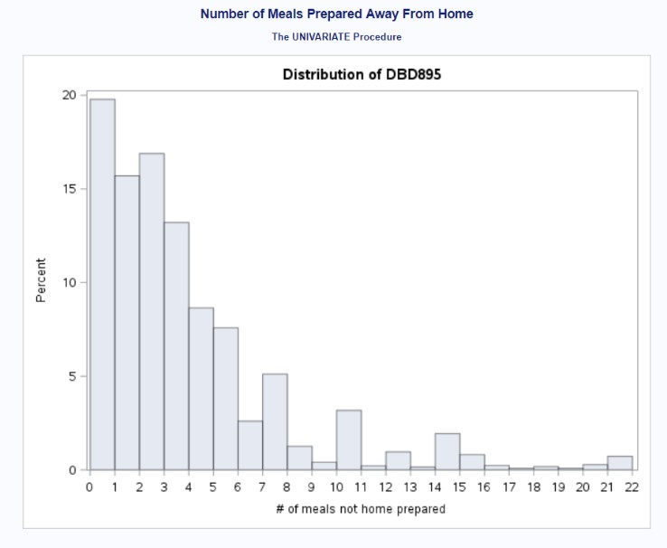
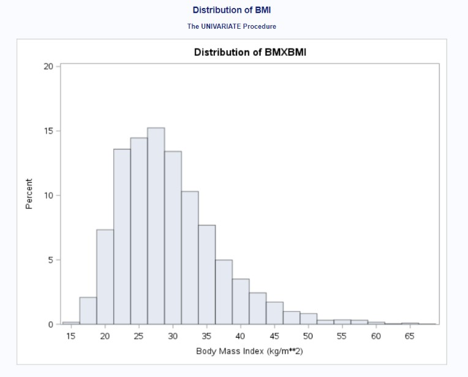
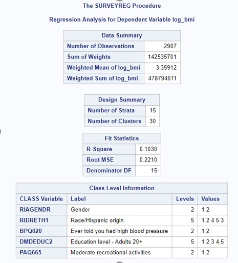
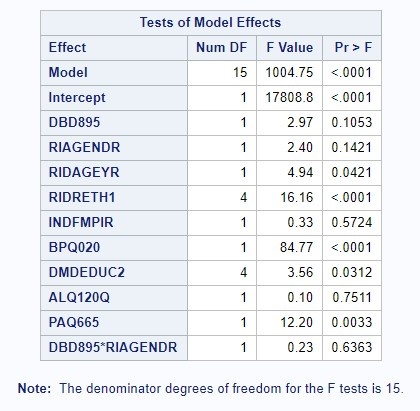
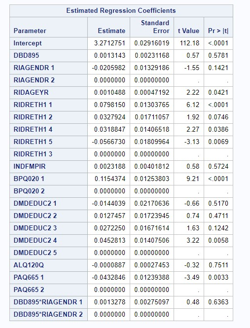
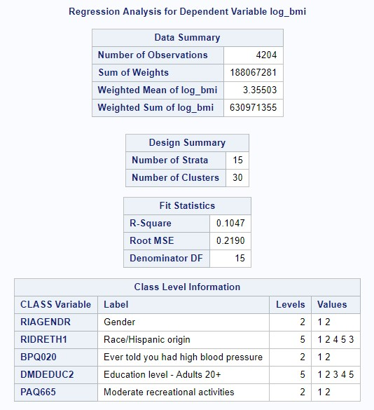
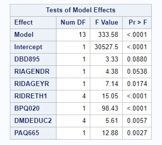
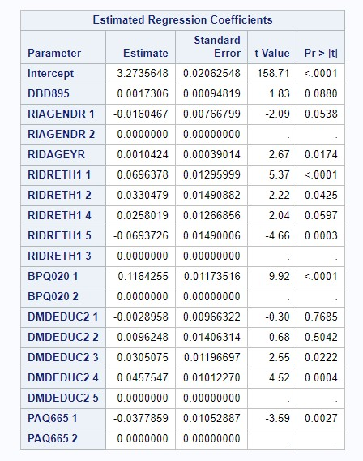
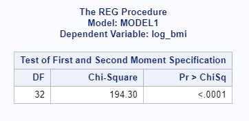
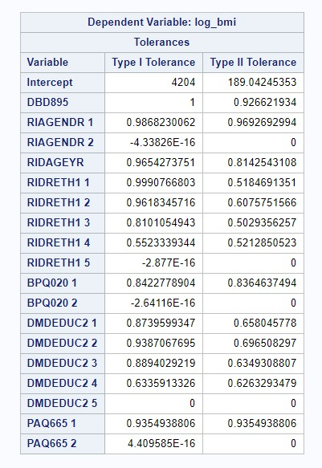

Obesity - one of the most complex public health issue facing our country today - in the United States reached 39.8% for the adult population in 2015-2016; it is associated with an increased risk for reduced quality of life and is a precursor to many other serious health conditions. It results from a combination of factors, including individual behavior - specifically, dietary behavior and patterns have been noted as important predictors of obesity. Indeed, it has been reported that Americans’ food consumption has shifted to incorporate more food prepared outside the home, becoming close to one-third of an individual’s daily dietary intake. At the same time, nutritional quality in diets has decreased while overall calorie counts have increased. As American adults eat more meals prepared away from home, researchers have suggested that poor diet may partly be a culprit for this epidemic.
We decided to conduct an investigation of the National Health and Nutrition Examination Survey (NHANES) 2015-2016 dataset and explore whether there was an association between frequency of away-from-home meals and reported BMI levels among adults aged 18 to 65. We were comfortable using the self-reported NHANES questionnaire measures, as previous research has established them as good proxies for household food expenditures from receipts. Our main exposure of interest was the number of meals prepared away from home in the last week (variable DBD895) while our main outcome of interest was BMI (variable BMXBMI).
Our data were queried from the following 2015-2016 National Health and Nutrition Examination Survey tables that contained information regarding frequency of prepared away-from-home meals, BMI, and potential confounders and effect modifiers of interest: “Diet, Behavior, and Nutrition” (DBQ_I), “Demographics Data” (DEMO_I), “Blood Pressure and Cholesterol Data” (BPQ_I), “Body Measures” (BMX_I), and “Alcohol Use” (ALQ_I). Data were merged by a unique identifier for each respondent, “SEQN”, to create a master dataset linked from these original tables.
The main exposure of interest was the number of meals prepared away from home in the last week, including meals from places such as restaurants, fast food places, food stands, grocery stores, and vending machines. Respondents were asked to exclude meals provided as part of a school lunch or breakfast, as well as meals provided as part of a community program. The outcome of interest was body mass index (BMI) in kg/m2, captured as a continuous measure. The distribution of BMI was right-skewed, so a log transformation was applied to achieve a normal distribution of BMI values. Multiple linear regression was used to model the relationship between the outcome and exposure of interest, controlling for covariates that may confound the relationship.
Based on the current literature on this topic and hypothesized associations, the following variables were considered for inclusion in the final model to control for potential confounding: gender (male or female), age (included only 18-65), race/ethnicity (Mexican American, Other Hispanic, Non-Hispanic White, Non-Hispanic Black, Other/Multiracial), ratio of family income to the poverty level (0 to 5), history of high blood pressure (yes or no), physical activity (yes versus no for moderate-intensity recreational activities in a typical week), education level (< 9th grade, 9th-11th grade, high school graduate, some college, college graduate), and alcohol consumption (frequency of alcohol consumption in past 12 months).9-11 Gender, ethnicity, history of high blood pressure, physical activity, and education level were included in the model as dummy variables. The reference level for gender was “Female”, the reference level for ethnicity was “Non-Hispanic White”, the reference level for history of high blood pressure was “No”, the reference level for physical activity was “No,” and the reference for education level was “College Graduate.” Additionally, we considered the inclusion of a term for the interaction between the main exposure and gender. The list of variables used are below:
SEQN: Unique identifier for each respondent
RIAGENDR: Gender
RIDAGEYR: Age in years at screening
RIDRETH1: Race/ethnicity
INDFMPIR: Ratio of family income to poverty
WTINT2YR: Full sample 2-year interview weight
WTMEC2YR: Full sample 2-year MEC exam weight
SDMVPSU: Pseudo-cluster/PSU, masked for confidentiality
SDMVSTRA: Pseudo-strata, masked for confidentiality
BPQ020: Ever told that he/she had high blood pressure
DBD895: Number of meals not prepared at home in the last week
BMXBMI: BMI
DMDEDUC2: Education level, adults 20+ only
PAQ665: Moderate-intensity recreational activities in a given week
ALQ120Q: Frequency of drinking alcohol in the past 12 months
The final model included 4,204 observations and was determined using a backward selection method that required the inclusion of the main exposure and used an a-priori alpha of 0.10 as the criterion for covariates to be included in the final model. Standard methods for complex survey data to account for clustering and weighting in the sampling of the population were applied. Since our data included examination variables, we used the exam sample weights as opposed to the interview sample weights.
Figure 1 shows the distribution of the individuals who provided the number of meals prepared away from home in the last week. Despite DMD895 capturing a wide variety of food places, most individuals stated that they did not receive any meals prepared away from home. The overall distribution was right-skewed. Figure 2 provides the distribution of the individuals who provided their BMI. Because the distribution was slightly right-skewed, we performed a log transformation of the outcome variable (not shown; see appendix containing SAS output).
Figure 1: Distribution of DBD895

Figure 2: Distribution of BMXBMI (Before Log Transformation)

We performed a backward model selection process to determine the best linear regression model to account for our exposure, outcome, and covariates. Because some of our variables were used as proxies and imperfectly measured what we wanted to examined and because of the sheer number of covariates we wanted to include in the model, we conservatively went for using an alpha level of 0.10. Our first model selection step included all variables (see Figure 3); because frequency of alcohol consumption had a p-value of 0.7511, we removed variable ALQ120Q. Our second model selection step indicated that our interaction term between gender and frequency of alcohol consumption had a p-value of 0.8972, so we removed the associated interaction term. Our third model selection step indicated that the variable examining the ratio of family income to poverty level had a p-value of 0.4281, so we removed variable INDFMPIR. Our final linear regression model included number of meals prepared away from home, age, gender, race/ethnicity, education levels, history of blood pressure, and physical activity levels as predictors in our model (see Figure 4). All covariates in this model were significant at alpha = 0.10.
Figure 3: Model Selection - All Covariates
  
Figure 4: Model Selection - Final Model
  
Our final linear regression model contained an r-squared value of 0.1047; 10.47% of the variation in BMI was explained by its linear association with number of meals prepared away from home, age, gender, race/ethnicity, education levels, history of blood pressure, and physical activity levels. Adjusting for all other covariates, getting one additional meal prepared away from home predicted an increase in BMI of 0.0017306, on average (p = 0.088).
Regression diagnostics were performed to determine if the assumptions of the linear regression model were violated. The assumption of normal residuals was tested using the Kolmogorov-Smirnov test. Given a p-value less than 0.01, the assumption of normal residuals was violated (see Figure 5; see appendix for full output); however, due to the large sample size, the effect of non-normal residuals is likely small. The White test was used to test the assumption of homoscedasticity for the main exposure of interest, resulting in a p-value of less than 0.05, indicating that this assumption was violated (see Figure 6; see appendix for full output). Given the clustering of the dataset, the assumption of independence was likely violated, but clustering was accounted for through regression methods designed for complex survey data. A tolerance of 0.10 was used as the cutoff to identify any potential multicollinear variables, but no covariates had a tolerance less than 0.10, indicating that no covariates were significantly collinear (see Figure 7; see appendix for full output). Using the RStudent value, we determined 64 observations that were outliers; using Cook’s D values, we determined 200 observations that were outliers (see appendix for output for outliers and influence points).
Figure 5: Regression Diagnostics – Normality of Residuals
Figure 6: Regression Diagnostics – Homoscedasticity

Figure 7: Regression Diagnostics – Multicollinearity

We examined the association between number of prepared away-from-home (AFH) meals and reported BMI levels among adults aged 18 to 65, while adjusting for gender, age, race/ethnicity, education level, ratio of family income to poverty level, history of high blood pressure, physical activity, and alcohol consumption. We also included gender and alcohol consumption as an interaction term. Our first model, which included all covariates, found an extremely small percentage of the variability in BMI levels being explained by the covariates and a negligible linear association between the exposure and outcome - the r-squared value was only 0.103. After running a backward model selection process and obtaining the best model, we found that 10.47% of the variation in BMI was explained by its linear association with seven predictors – number of meals prepared away from home, age, gender, race/ethnicity, education levels, history of blood pressure, and physical activity levels in our multivariable linear regression model. Adjusting for all other covariates, getting one additional meal prepared away from home predicted an increase in BMI of 0.0017306, on average (p = 0.088, alpha = 0.1).
A major limitation of our study is that AFH meal frequency is a proxy for nutritional quality of food; while it is believed that AFH meals are generally unhealthier than meals eaten in the home, this may not always be the case. For example, we do not know if the majority of foods consumed at home are processed and packaged items with low nutritional quality (e.g., junk foods, prepared buffet lines), or fresh produce and healthy ingredients used to cook highly nutritional meals. Similarly, we cannot infer serving sizes or total caloric intake of AFH meals based on frequency of their consumption. Another limitation is that BMI is an imperfect measure of obesity or excess adiposity. There may be healthy individuals with low percentage of body fats that fall into the “obese” or “overweight” categories, which may also contribute to misclassification of the outcome of interest.
The strengths of our study are that the NHANES dataset is a well validated data source, having gone through strict quality assurance and control. The questionnaire items for dietary behavior questions included a Computer-Assisted Personal Interview system with build in data checks to verify “skip” patterns in the survey, ensure completeness and consistency.8 Another strength of our study is our large sample size. Despite numerous covariates examined in this study, we are sufficiently powered to detect and significant associations between food expenditure behaviors and body mass index. Finally, by using regression models designed for complex, survey-based data, we were able to account for clustering and weighting of the sample.
However, our analysis has several limitations, so the null association found should be interpreted with caution. Due to misclassification of both the exposure of interest, food consumption habits, and outcome of interest, BMI, we believe there is a high probability that our results are biased towards the null. We think additional studies should be conducted to address these limitations by including more detailed information regarding nutritional quality and calorie consumption and for measurements of excess body weight and body fat. More detailed study designs could reduce potential of misclassification of the exposure, and help us better understand food expenditure patterns as a risk factor for BMI, and help inform obesity-prevention public health policies and programs in the future.
Find the appendix containing the SAS code and output here.